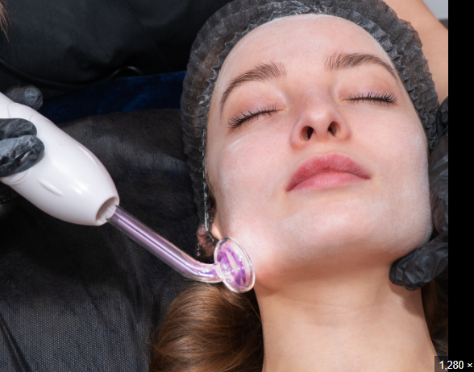

La cosmetología ayuda a mejorar la autoestima, la salud de la piel y la confianza personal. Además, permite prevenir problemas cutáneos, mantener una apariencia saludable y brindar relajación mediante distintos tratamientos. Ayuda a mantener la piel más limpia, hidratada y saludable, previniendo problemas como el acné, la resequedad o el envejecimiento prematuro. También contribuye a fortalecer el cabello y mejorar la apariencia de manos y uñas. Además de los efectos físicos, estos tratamientos pueden aumentar la autoestima, la seguridad personal y el bienestar general, ya que ayudan a que las personas se sientan mejor con su imagen.
